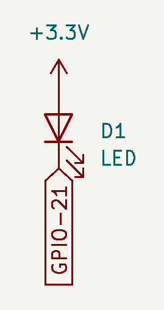
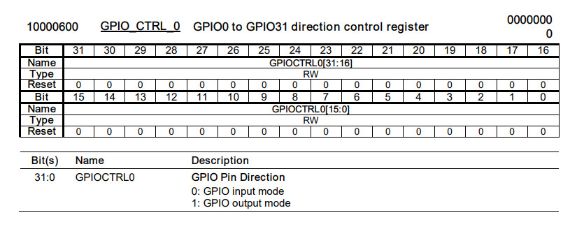
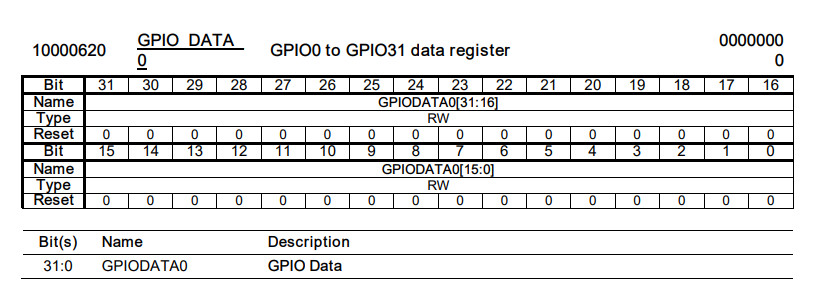
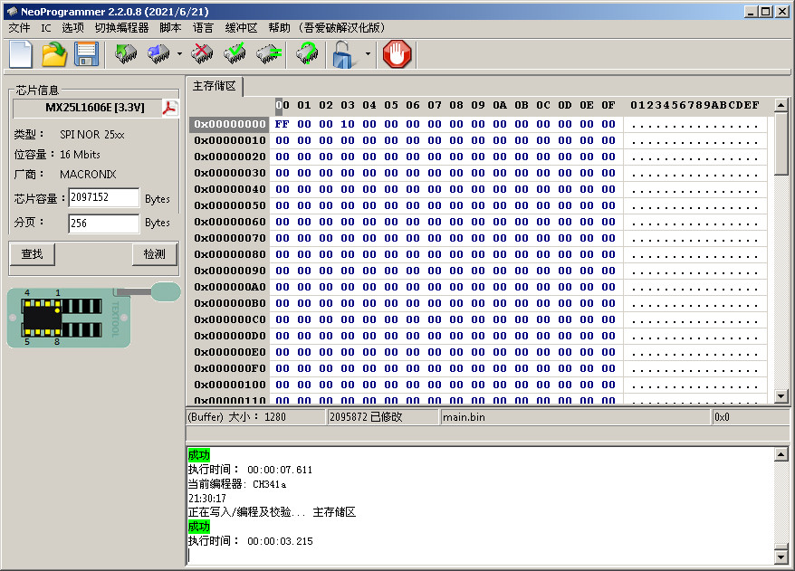
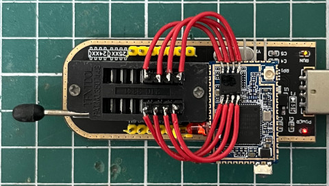
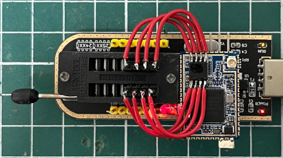

LED是連接到GPIO-21



.extern _start
.set noreorder
.equ GPIO_CTRL_0, 0xb0000600
.equ GPIO_DATA, 0xb0000620
.text
_start:
b reset
.org 0x400
reset:
li $8, GPIO_CTRL_0
li $9, (1 << 21)
sw $9, 0($8)
li $8, GPIO_DATA
li $9, (1 << 21)
li $10, 0
loop:
xor $10, $9
sw $10, 0($8)
li $5, 5000
0:
addi $5, $5, -1
bnez $5, 0b
nop
b loop
nop
main.ld
OUTPUT_FORMAT("elf32-tradlittlemips", "elf32-tradbigmips", "elf32-tradlittlemips")
OUTPUT_ARCH(mips)
ENTRY(_start)
SECTIONS {
. = 0x00000000;
.text : { *(.text) }
.data : { *(.data) }
.bss : { *(.bss) }
}
Makefile
all: mipsel-linux-as -o main.o main.s mipsel-linux-ld -T main.ld -o main.elf main.o mipsel-linux-objcopy -O binary main.elf main.bin clean: rm -rf main.bin main.o main.elf
編譯
$ make
mipsel-linux-as -o main.o main.s
mipsel-linux-ld -T main.ld -o main.elf main.o
mipsel-linux-objcopy -O binary main.elf main.bin
接著使用NeoProgrammer將main.bin燒錄到Flash


